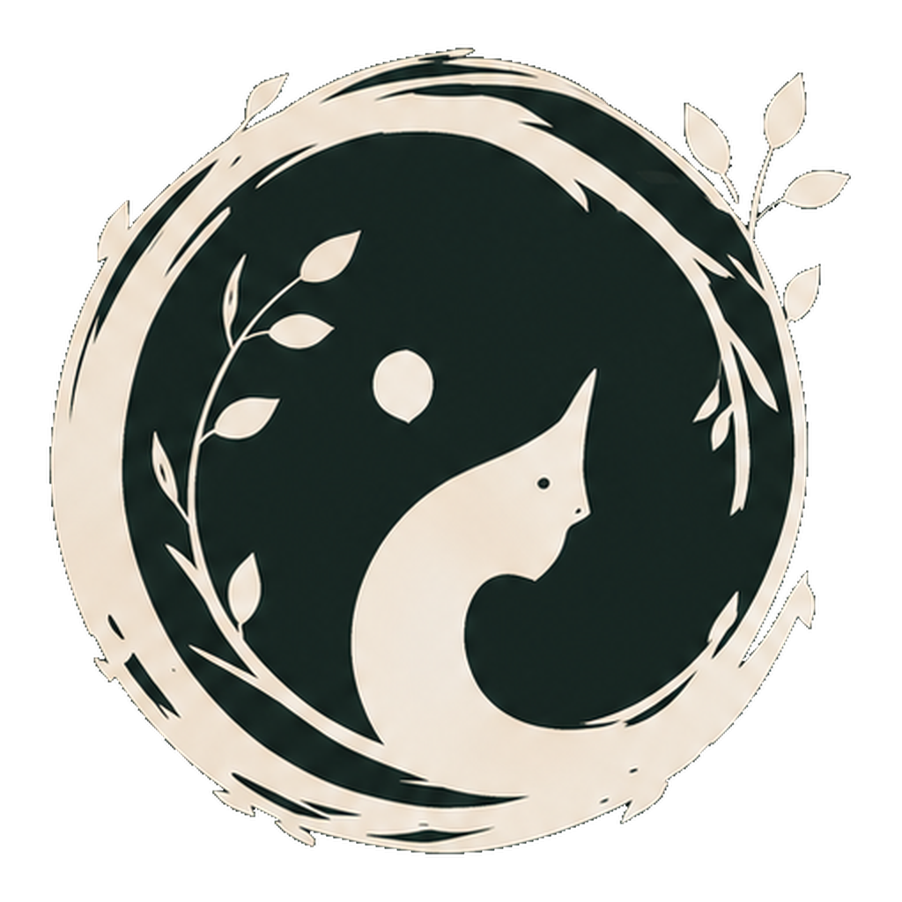

「精靈不會離開森林,牠只是搬到你的腦裡。
靜靜記得,牠的森林,有你經過的痕跡。」
本頁是 mori-desktop 視覺系統的單一可信來源。CSS / icon / 文案
都對齊這份。原始設計稿在 docs/design/mori-brand.png。
Mori 是住在腦裡的精靈,陪伴記憶與意識共生長。 每一段記憶都是她的一部分,持續累積、反思、學習與分享。
圓形葉冠 + Mori 側像 + 太極流動曲線。象徵「環繞守護的記憶 + 持續流動的意識」。 Monochrome 設計 — interior 透明,可放在任何顏色 UI 上自然融合。
兩個版本,依「目標 UI 主題」選 — 命名 = 給哪種主題用,不是 logo 本身什麼色:
logo-light.png
深綠 stroke + 米色 interior
米色 fill 跟 ivory bg 融合 → 主表現:森林環
e.g. brand book、淺主題視窗

logo-dark.png
米色 stroke + 深綠 interior
深綠 fill 跟深底 bg 融合 → 主表現:米色 silhouette
e.g. sidebar、Tauri tray、floating widget
命名規則(避免混淆):
logo-<theme>.png 表示「給該 theme 用」,不是「logo 本身是什麼色」。
logo-light = light theme 用,logo-dark = dark theme 用 — 跟 CSS
color-scheme 語意一致。
| 檔案 | 用途 |
|---|---|
docs/design/Logo.png | 原始設計稿(上下分版本,1254×1254) |
docs/design/mori-logo-dark.png | 深綠版 monochrome(1024×1024) |
docs/design/mori-logo-light.png | 米色版 monochrome(1024×1024) |
docs/design/mori-logo.png | 主版本(統一使用 = logo-dark 同檔) |
public/logo.png | frontend 引用版(sidebar / 主視窗 brand 圖示) |
docs/sprites/logo*.png | 公式書引用版(同檔) |
crates/mori-tauri/icons/{16,32,64,128,256}.png | Tauri bundle 用,從 mori-logo.png 下採樣 |
10 個主色,從深森林綠到象牙白。CSS variables 定義在 docs/_book.css
跟未來 src/shell.css :root,改 brand 只動 root。
#F3F0E6 · text #3B2F2F · brand #2C4A3D ·
surface #FFFFFF 或 #E6DECA · active #6A8F72rgba(44, 74, 61, 0.95) · text #E6DECA · active #A8C5A2#2C4A3D(系統列淺底)/
#E6DECA(系統列深底)森之語 Serif
靜謐的森之中,記憶隨年輪累積,我們並肩探索世界的奧秘。
font-family: "Noto Serif TC", "Source Han Serif TC", serif;
森之語 Sans
介面元素、副標、說明文字、按鈕、表單 — 走 sans-serif 求清晰。
font-family: "Noto Sans TC", "PingFang TC", sans-serif;
{kind=link}